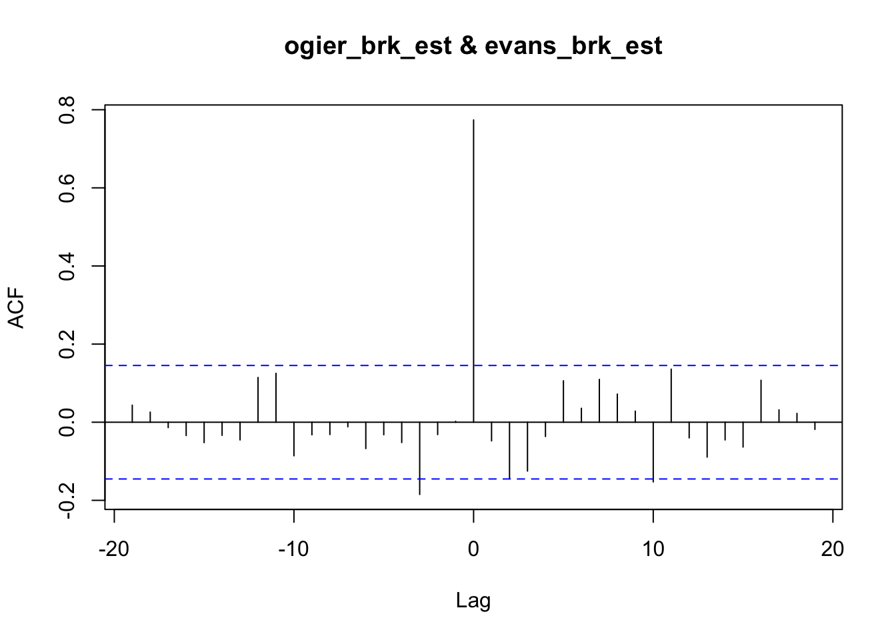

16 Correlating Telemetry Traces
We can use a cross-correlation function to try to identify the extent to which traces are similar across drivers. The approxfun() estimator does a very simple interpoloation between consecutive values in the original dataset, which means that actual telemetry data values are pinned in the prediction model and used for local estimation.
ts_estimator = function(df, x, y, points){
estimator_ = approxfun(df[[x]], df[[y]])
estimator_(points)
}We can use this function to estimate different properties from the time series telemetry data.
ogier_speed_est = ts_estimator(trj_ogier, "cum_dist", "speed", segments)## Warning in regularize.values(x, y, ties, missing(ties), na.rm = na.rm):
## collapsing to unique 'x' valuesevans_speed_est = ts_estimator(trj_evans, "cum_dist", "speed", segments)## Warning in regularize.values(x, y, ties, missing(ties), na.rm = na.rm):
## collapsing to unique 'x' valuesspeed_correlation_ogier_evans = ccf(ogier_speed_est, evans_speed_est)
speed_correlation_ogier_evans##
## Autocorrelations of series 'X', by lag
##
## -19 -18 -17 -16 -15 -14 -13 -12 -11 -10 -9
## 0.111 0.140 0.072 0.065 -0.027 -0.026 0.007 -0.020 0.006 -0.087 -0.051
## -8 -7 -6 -5 -4 -3 -2 -1 0 1 2
## -0.013 -0.027 -0.079 -0.010 0.015 0.080 0.273 0.487 0.929 0.509 0.328
## 3 4 5 6 7 8 9 10 11 12 13
## 0.080 0.030 0.036 -0.008 -0.001 0.031 -0.028 -0.167 -0.055 -0.073 -0.015
## 14 15 16 17 18 19
## -0.052 -0.009 0.088 0.073 0.125 0.087We can report on the correlation at different lags by using the lag value as an index value:
lag = 0
speed_correlation_ogier_evans[lag]##
## Autocorrelations of series 'X', by lag
##
## 0
## 0.929Brake cross-correlation:
ogier_brk_est = ts_estimator(trj_ogier, "cum_dist", "brk", segments)## Warning in regularize.values(x, y, ties, missing(ties), na.rm = na.rm):
## collapsing to unique 'x' valuesevans_brk_est = ts_estimator(trj_evans, "cum_dist", "brk", segments)## Warning in regularize.values(x, y, ties, missing(ties), na.rm = na.rm):
## collapsing to unique 'x' valuesccf(ogier_brk_est, evans_brk_est)
It occurs to me that if we use a high resolution sample, for example at the level of 1m, we might be able to detect consistent areas where one driver brakes sooner than another. This may be hard to spot in rally telemetry, but it may be something observable in circuit races over many laps of the same circuit.